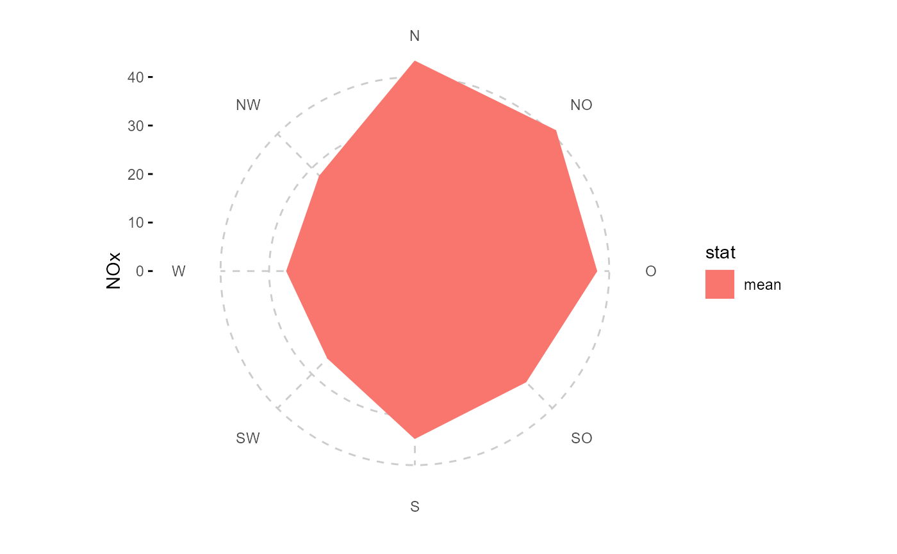
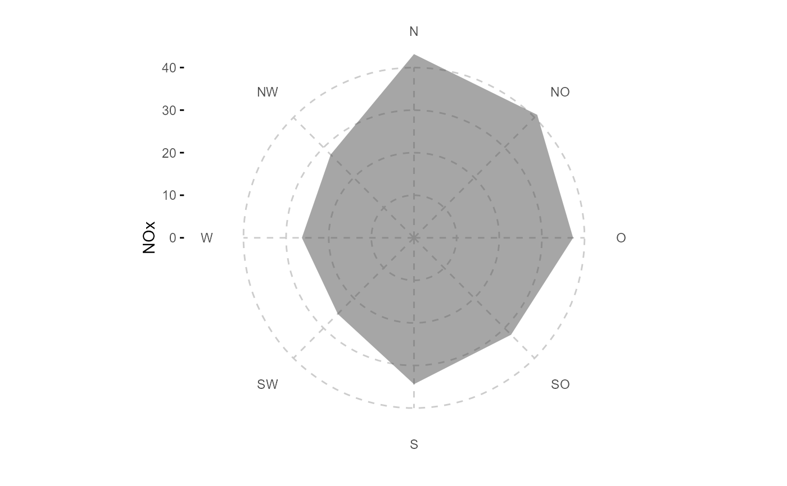
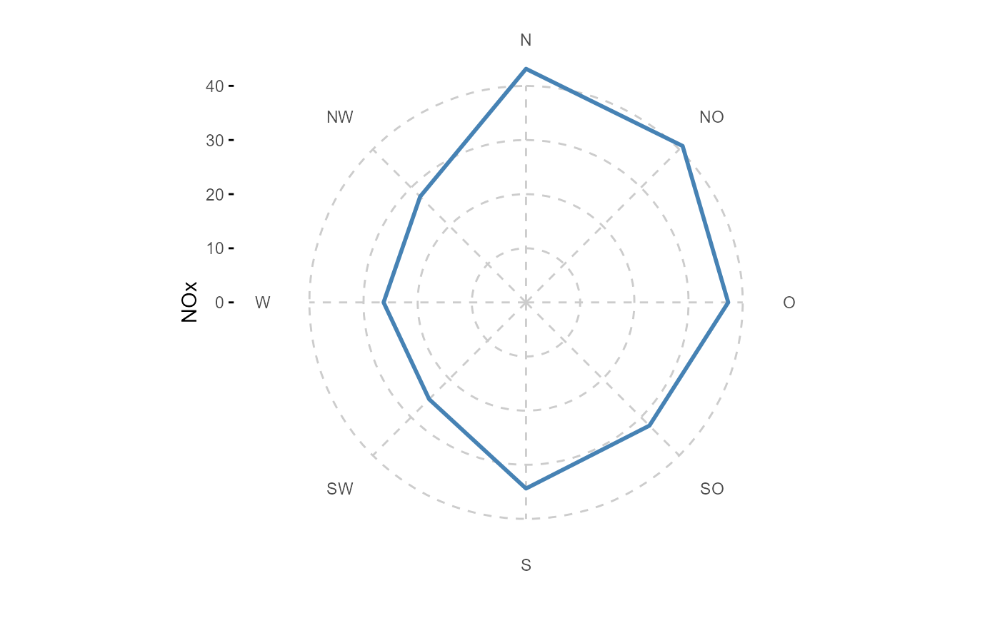
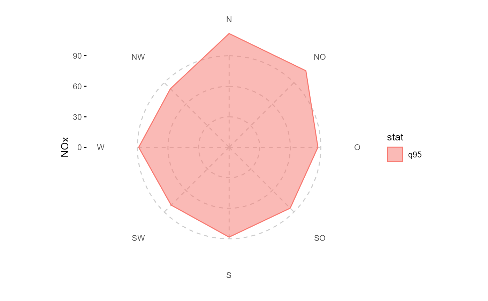
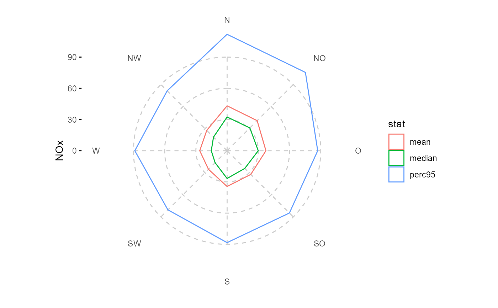
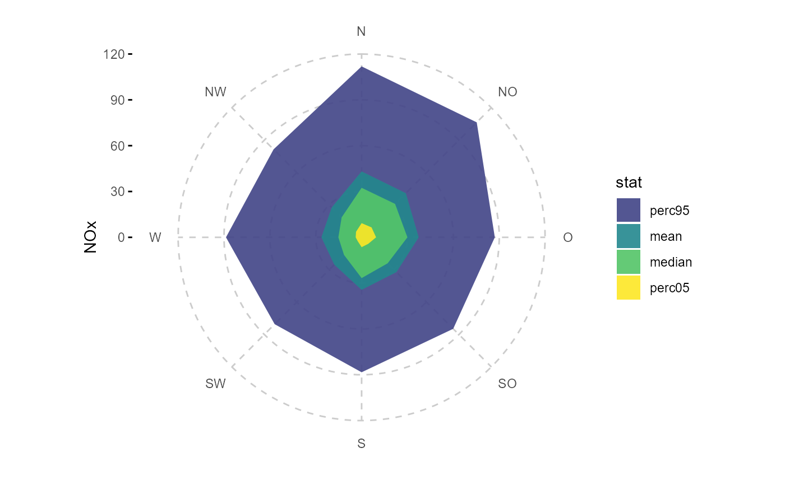
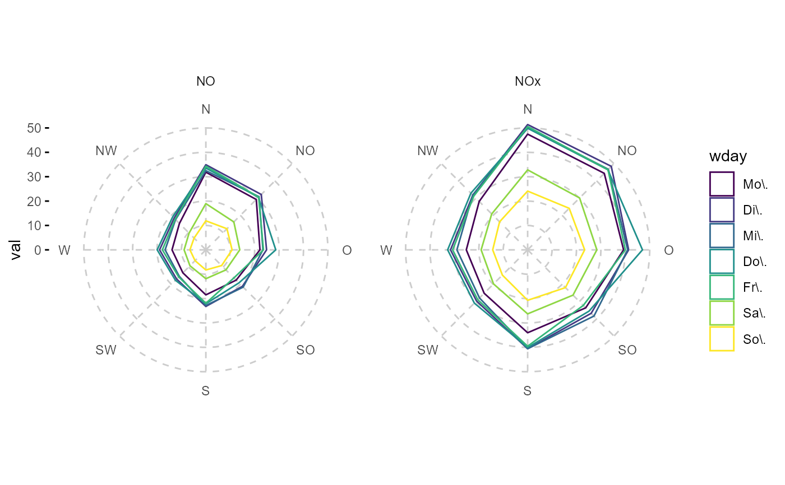
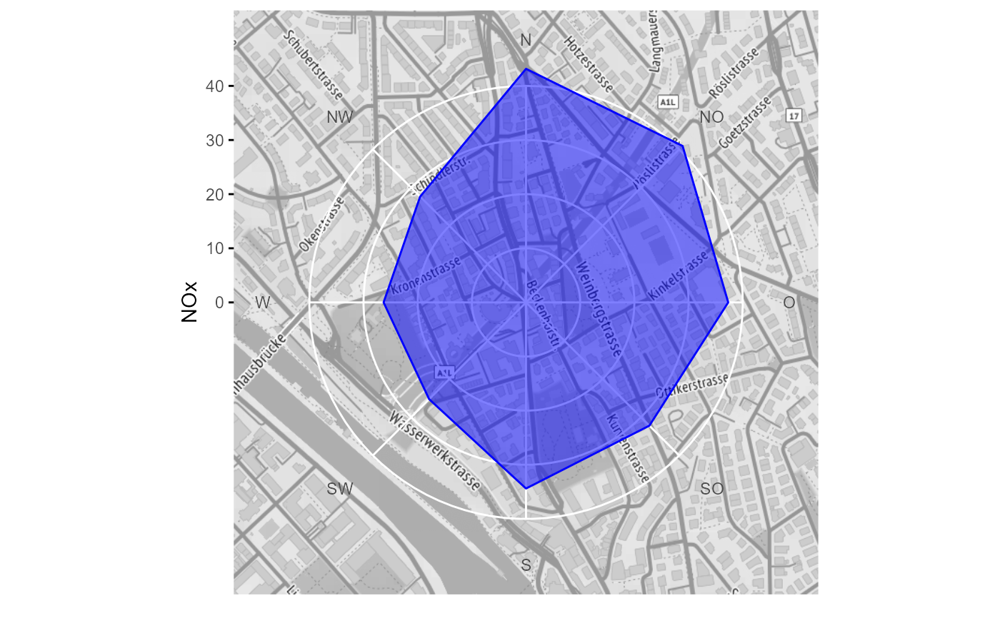

ggplot2-wrapper to summarise and plot data by wind direction bins as radar plot
Source:R/ggradar.R
ggradar.Rdggplot2-wrapper to summarise and plot data by wind direction bins as radar plot
ggradar( data, wd, y, group = stat, mapping = NULL, facet_groups = grp(), wd_binwidth = 45, fun = "mean", fun.args = list(), nmin = 3, fun_reorder = identity, bg = NULL, ... )
Arguments
| data | tibble containing wind speed, wind direction and air pollutant concentration data |
|---|---|
| wd | symbolic giving the wind direction column name |
| y | symbolic giving the wind direction column name |
| group | symbolic or expression defining the grouping for the |
| mapping | add or overwrite mappings. default is aes(x = lon, y = lat, group = date, color = height) (x has to be wind direction and y the parameter of interest); for more details, check out the examples |
| facet_groups | symbolic or expression specifying the variable(s) for facetting; passed to |
| wd_binwidth | numeric, binwidth for wind direction in °, wd_binwidth should fullfill:
|
| fun | character string or vector of character strings, stat function(s) to be applied at wind direction bins |
| fun.args | list, arguments to fun |
| nmin | numeric, minimum number of data points to be averaged in one wind direction bin |
| fun_reorder | a function (default is |
| bg | raster map, e.g. ggmap object as plot background |
| ... | other parameters passed on to |
Value
ggplot2::ggplot() object
Examples
library(ggplot2) library(dplyr) library(tidyr) fn <- rOstluft.data::f("Zch_Stampfenbachstrasse_2010-2014.csv") data <- rOstluft::read_airmo_csv(fn) %>% rOstluft::rolf_to_openair() %>% dplyr::mutate(wday = lubridate::wday(date, label = TRUE, week_start = 1)) # wind direction radar chart with mean values of y as summary statistics ggradar(data, wd, NOx)# don't like the legend? ggradar(data, wd, NOx, show.legend = FALSE)# wind direction radar chart with pre-calculated summary stats # (same as above) df <- data %>% dplyr::filter(!is.na(.data$wd)) %>% dplyr::mutate(wd = cut_wd(.data$wd, binwidth = 45)) %>% dplyr::group_by(.data$wd) %>% dplyr::summarise(NOx = mean(.data$NOx, na.rm = TRUE)) %>% dplyr::ungroup()#># we can provide a string as group, in the case no variable # for group exists in the data ggradar(df, wd, NOx, "mean", fun = "identity", show.legend = FALSE)# same as above but with defined fill and alpha, no color ggradar(data, wd, NOx, fill = "gray30", alpha = 0.5, color = NA)# same as above but with no fill, defined color etc ggradar(data, wd, NOx, fill = NA, color = "steelblue", lwd = 1)# higher wind direction resolution (actually: highest with predefined labels) ggradar(data, wd, NOx, wd_binwidth = 11.25, fill = "gray30", alpha = 0.5)# apply different statistic function q95 <- function(x, ...) quantile(x, 0.95, ...) ggradar(data, wd, NOx, fun = list(q95 = q95), alpha = 0.5)# group by multiple statistic functions and omit polygon filling ggradar(data, wd, NOx, fun = list("mean", "median", "perc95" = q95), fill = NA)#> Warning: attributes are not identical across measure variables; #> they will be dropped# ... adjust x and color and fill scales and reorder stat levels for appropriate fill order q05 <- function(x, ...) quantile(x, 0.05, ...) q95 <- function(x, ...) quantile(x, 0.95, ...) stat_reorder <- function(stat) { factor(stat, levels = rev(c("perc05", "median", "mean", "perc95"))) } ggradar(data, wd, NOx, fun = list("perc05" = q05, "median", "mean", "perc95" = q95), fun_reorder = stat_reorder, color = NA, alpha = 0.9) + scale_y_continuous(limits = c(0,120)) + scale_fill_viridis_d(begin = 0.2)#> Warning: attributes are not identical across measure variables; #> they will be dropped#> #># ... same as above but with one-colored fill and stats as facets ggradar(data, wd, NOx, fun = list("mean", "median", "perc95" = q95), fill = "steelblue", show.legend = FALSE) + facet_wrap(vars(stat), ncol = 2)#> Warning: attributes are not identical across measure variables; #> they will be dropped# multiple y-parameters and facetting (facetting variable has to be separately # specified in facet_groups!) df2 <- dplyr::select(data, wd, NO, NOx, wday, date) %>% tidyr::gather(par, val, -wd, -wday, -date) ggradar(df2, wd, val, wday, facet_groups = grp(par), fill = NA) + facet_wrap(vars(par))# same as above, but calculate grouping on the fly with an expression ggradar(df2, wd, val, group = lubridate::wday(date, label = TRUE, week_start = 1), facet_groups = grp(par), fill = NA) + labs(color = "Week day") + facet_wrap(vars(par))#> Warning: Discarded datum CH1903+ in CRS definitionbg <- get_stamen_map(bb) ggradar(data, wd, NOx, bg = bg, color = "blue", fill = "blue", alpha = 0.5) + theme(panel.grid.major = ggplot2::element_line(linetype = 1, color = "white"))